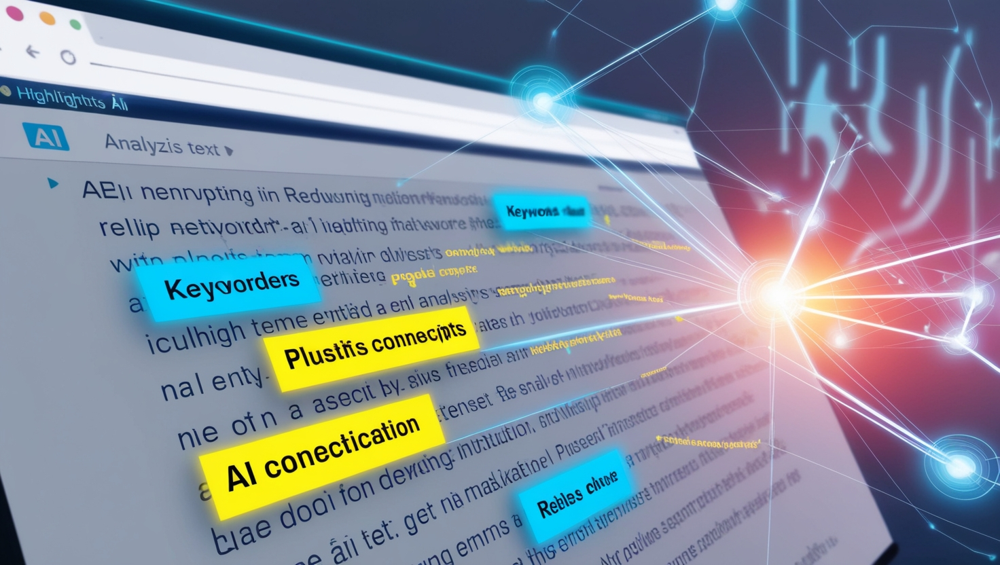

Tekstanalyse og forståelse med AI

Kunstig intelligens har revolusjonert måten vi kan analysere og forstå tekster på. Med moderne AI-verktøy kan studenter få dypere innsikt i komplekse tekster og effektivisere sin læringsprosess.
Nøkkelfunksjoner i AI-basert tekstanalyse
- Automatisk sammendrag: Får frem hovedpoengene i lange tekster
- Nøkkelordidentifisering: Fremhever viktige begreper og konsepter
- Kontekstuell analyse: Forstår betydningen av ord i deres sammenheng
- Tematisk kategorisering: Grupperer relatert informasjon
Praktisk anvendelse i studier
1. Akademisk lesing
Slik kan AI støtte din akademiske lesing:
- Generere sammendrag av forskningsartikler
- Identifisere hovedargumenter og støtteargumenter
- Forklare komplekse faguttrykk i kontekst
- Skape forbindelser mellom relaterte konsepter
2. Dybdeanalyse
AI kan hjelpe deg med å:
- Analysere argumentasjonsstruktur
- Identifisere retoriske virkemidler
- Undersøke tekstens tone og stil
- Sammenligne ulike tekster og perspektiver
Beste praksis for AI-støttet tekstanalyse
- Forberedelse:
- Ha klare mål for analysen
- Velg relevante AI-verktøy for oppgaven
- Forbered teksten i riktig format
- Gjennomføring:
- Start med overordnet analyse
- Gå gradvis dypere inn i spesifikke aspekter
- Noter interessante funn underveis
- Etterarbeid:
- Verifiser AI-ens tolkninger
- Sammenfatt funnene
- Reflekter over analysen
Verktøy for tekstanalyse
Populære AI-verktøy
- Språkmodeller: For dybdeforståelse og kontekstuell analyse
- Tekstanalyseverktøy: For strukturert analyse av store tekstmengder
- Visualiseringsverktøy: For å se mønstre og sammenhenger
Utfordringer og begrensninger
Vær oppmerksom på følgende når du bruker AI til tekstanalyse:
- AI kan misforstå kompleks kontekst
- Kulturelle og historiske nyanser kan gå tapt
- Kreative og kunstneriske elementer kan være vanskelige å analysere
- Kritisk tenkning er fortsatt essensielt
Konklusjon
AI-verktøy for tekstanalyse er kraftige hjelpemidler som kan gi deg dypere innsikt i tekster og effektivisere din læring. Ved å kombinere disse verktøyene med kritisk tenkning og god metodikk, kan du få mest mulig ut av dine studier.